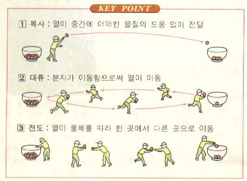

[전도,대류,복사를 설명한 그림]
# 이 글은 '물리 수업의 거짓말 2' 의 보충설명이다. #
검색중에 재미있는 그림이 나와서 씹어보려고 한다.
위 그림은 열 에너지를 빨간 공으로 묘사했다.
아마도 학생들의 암기에 도움을 주기 위해 이렇게 표현한것 같다.
하지만 열 에너지는 결코 물질이 아니다.
아마도 학생들의 암기에 도움을 주기 위해 이렇게 표현한것 같다.
하지만 열 에너지는 결코 물질이 아니다.
★ 그럼 열 에너지란 무엇인가?
우리가 아는 열 에너지는 두가지 형태로 존재한다.
첫번째는 분자의 운동 에너지 이고
두번째는 빛이다. (적외선이 아니라 모든 파장의 빛이 열 에너지다)
두번째는 빛이다. (적외선이 아니라 모든 파장의 빛이 열 에너지다)
사실 순수한 열 에너지란 '빛' 뿐이다. 하지만 우리가 열 에너지를 느끼기 위해서는 분자의 운동 에너지로 변화되어야 하기 때문에 분자의 운동 에너지 또한 열 에너지로 부른다. (피부가 느끼기 위해서는 빛이 피부 세포의 분자를 진동하고 전도를 거듭해서 신경 세포까지 도달해야 한다.)
★ 복사는 무엇인가?
'복사'는 분자의 에너지 준위 (사실은 원자 수준에서의 핵과 전자의 에너지 준위)가 낮아지면서 빛을 발생하는 것을 말한다. 결국 분자의 운동량이 감소하면서 빛을 발산하는 것이다. (이유는 묻지 말자. 이것은 자연계의 '현상' 이다.)
반대로 빛을 받은 분자는 에너지 준위가 높아지면서 운동량이 증가한다. 마치 빛이라는 물질이 분자를 때린것과 같은 느낌이다.
우주공간에 뜨거운 쇠구슬이 있다고 할 때 쇠구슬 내부의 분자들이 갖고 있는 운동 에너지는 이렇게 빛으로 변환되어 '복사' 된다. 마찬가지로 외부로부터 복사되어 온 빛이 쇠구슬 분자에 닿으면 분자의 운동 에너지가 증가하여 가열된다.
★ 전도는 무엇인가?
이전 글에서 설명했드시 전도는 분자간의 운동에너지가 교환되는 현상이다.
절대 영도(0K, -273도씨)가 아닌 모든 물질의 분자는 운동하고 있다. 이웃 분자와 계속 충돌하면서 서로의 운동 에너지를 주고 받는다.
물질은 이렇게 진동하는 분자들로 구성되어 있다.
물질 내부에서는 끝없이 '전도'가 일어나는 것이다.
물질 내부에서는 끝없이 '전도'가 일어나는 것이다.
★ 마치며
공부한지 오래되서 기억이 안나는 분들을 위해 간단한 부연설명을 해봤다.
나는 2살짜리 아들이 한명 있다. 아들이 커서 학교를 다닐 때 내가 나의 아버지에게 느꼈던 그 느낌을 갖게 하기 위해서.
난 오늘도 공부한다.